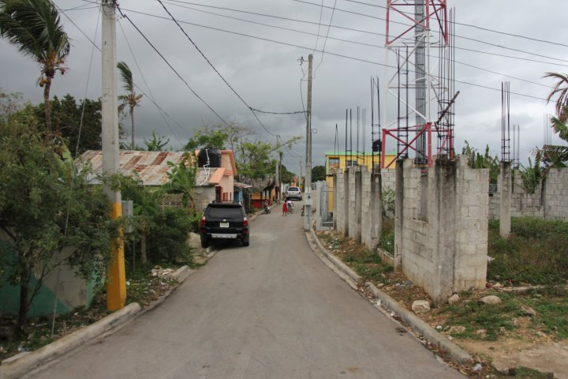

Like any place in the world, Punta cana has many risks that you should take precaution of while traveling. You should never drink any water unless it comes in a sealed bottle, even if you are told the water is filtered. This includes ice, which may have come from tap water. Many travelers in Punta Cana experience stomach trouble so you should choose what you eat, and where you eat, with care as it might not be safe to eat. You should make sure your food is well cooked and not raw and avoid any food that has been in the sun for too long. You should always take a Pepto Bismol tablet daily to avoid getting sick. The Dominican Republic is an economically disadvantaged country, and thefts are not uncommon. Use common sense when you’re within your resort, and be particularly observant when you’re traveling outside the resort area. You should not trust employees to look after your bags, nor should you expect that your belongings will be safe inside of a locked vehicle. Always use sunblock, and reapply it every 90 minutes to two hours, especially when you’re at the beach. Wear a hat when you’re planning to be outside for an extended period of time. There is also a slight risk of getting malaria from mosquitoes, malaria is endemic in the rural areas of the Dominican Republic that border Haiti. Although all resorts spray regularly for mosquito's be sure to bring an insect repellent with 25% "deet" for avoiding mosquito bites.
